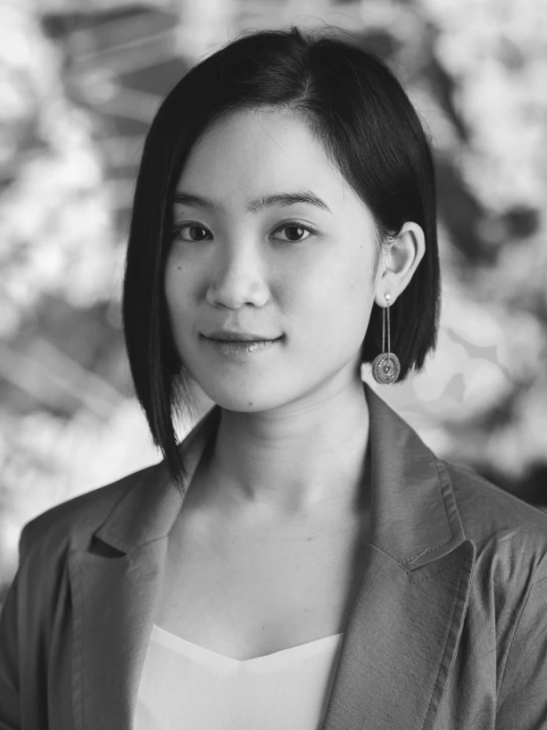
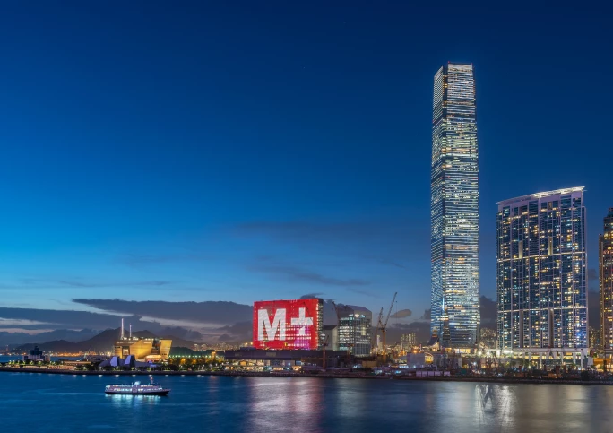
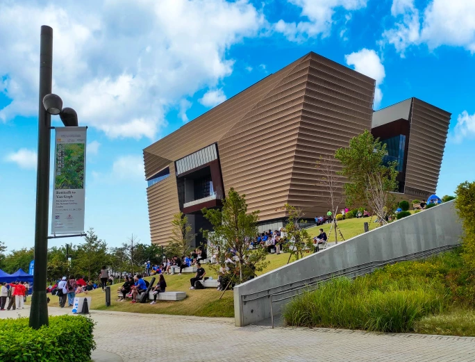
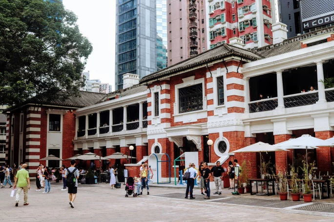
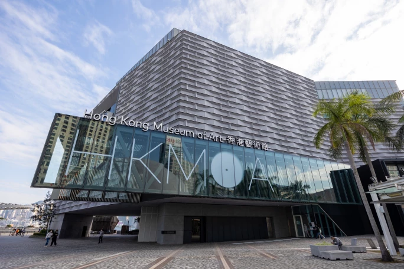
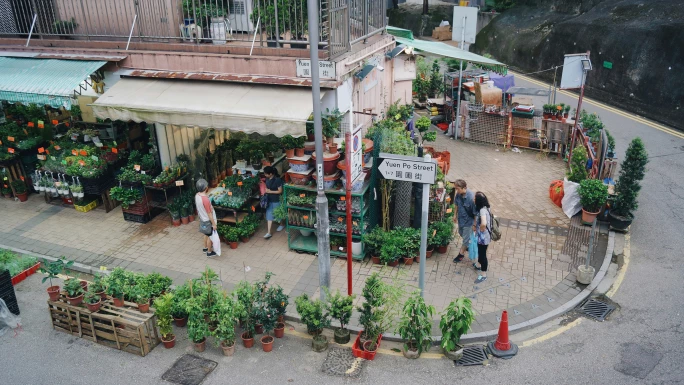
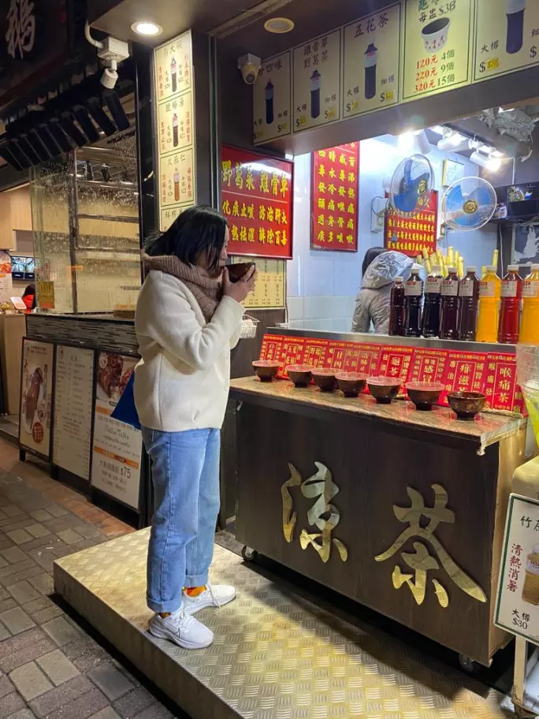
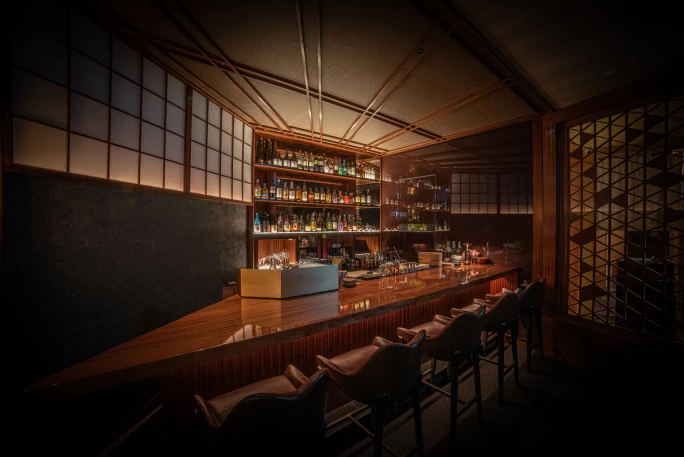
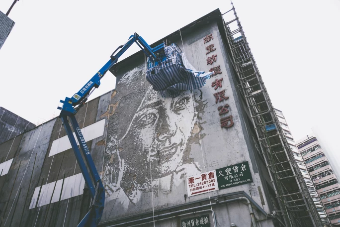

譯自 何詩慧 · Sotheby's
適逢香港巴塞爾藝術週與蘇富比春季拍賣舉行在即，讓我們跟隨蘇富比亞洲區當代藝術部日間拍賣及網上拍賣主管何詩慧的腳步，探索她最鍾愛的城市角落。她將帶我們品味香醇咖啡、尋訪清新花藝、細嚐精緻調酒、漫步城市山徑，一同發掘這座大都會裡的品味生活。

蘇富比亞洲區當代藝術部日間拍賣及網上拍賣主管何詩慧
在倫敦生活多年，香港始終是我魂牽夢縈的歸處。雖然香港確實步調急促，但世上又有哪個城市能讓你前一刻置身於金融區高樓林立的石屎森林，半小時的士車程後，就可置身山間小徑，飽覽海天一色？
香港不僅是饕客的天堂，更是藝術愛好者的樂土。在這裡，傳統文化的底蘊與現代生活的脈動交織共生，譜寫出遠超「中西合璧」的動人篇章。如果你願意花時間探索香港，你將體驗到香港獨一無二，融合不同文化與傳統的風采。接下來，讓我帶你走進我最愛的幾處私密天地，一同細嚐這座城市的獨特韻味。
香港拍賣（3 月 29 至 30 日）
三月底的香港，藝術氣息濃郁，各大畫廊與藝術機構紛紛呈獻精彩展覽，而年度盛事 巴塞爾藝術展（Art Basel）香港展會與香港藝術展會（Art Central）更為這座城市注入無限活力。如果你恰巧在香港，不妨來置地遮打蘇富比旗艦藝廊一樓，預覽我們即將於 3 月 29 日和 30 日舉行的現代及當代藝術拍賣（預展日期：3 月 20 至 29 日）。樓下還有「Corpus —— 身·物·三千年」展覽，展出約五十件貫穿歷史，探索人體形態的雕塑作品，展期至 3 月 27 日。
博物館巡禮

M+
香港是一座傾注熱情的城市，在藝術領域更見其真。展覽紛呈，活動不斷，藝術氛圍越發濃厚。而坐落於西九文化區的 M+ 博物館，無疑是這片藝術沃土上最耀眼的明珠。由 Herzog & de Meuron 操刀的工業風建築令我著迷，延續了他們在倫敦泰特現代美術館的美學理念，在維港一畔譜寫出另一篇建築詩章。M+ 的核心藏品是前瑞士駐北京大使烏利·希克（Uli Sigg）在1990 年代收藏的中國畫作，見證一代年輕藝術家勇於創新、突破常規的探索歷程。如果你在維多利亞港，想知道 M+ 的位置，有一個小竅門：面向九龍，你會看到博物館頂部的巨大幕牆，就在香港最高建築物環球貿易廣場的前面，非常醒目。此刻，何子彥的「戲夜尋謎」正在幕牆上演，展現眾多香港電影黃金時代的經典場面動畫，展期至 7 月 13 日。而館內的「畢加索──與亞洲對話」展覽，則呈現了這位西班牙藝術大師與亞洲藝術家作品之間的交流。
M+：九龍博物館道 38 號西九文化區

香港故宮文化博物館
從 M+ 出發，踏著綿延起伏的草坪，不消片刻便可抵達香港故宮文化博物館。這座文化寶庫珍藏著中華帝國的藝術瑰寶，從工筆丹青到玉器雕琢，從瓷器珍品到華服織繡，無一不是皇家氣韻的完美呈現。每當佇立於明代瓷器展櫃前，我總會被那份精工細琢的典雅所懾，彷彿穿越時空，觸摸到匠人傾注的心血，感受到歷史的脈動。這些器物不僅是藝術臻品，更是連結古今的文化橋樑。博物館通常雅客雲集，建議預先購票。除了常設展覽外，目前的特展還包括「流動的盛宴──中國飲食文化」和「當紫禁城遇上凡爾賽宮──十七、十八世紀中法文化交流」。
香港故宮文化博物館：九龍西九文化區博物館道 8 號

大館
香港是一座活力永遠充沛的城市，在傳統與創新之間不斷蛻變重生。大館的重生，正是這座城市生命力的絕佳印證。大館建於十九世紀，曾是警署和監獄，亦曾見證詩人戴望舒的幽居歲月。2018 年，它搖身一變，成為中環心臟地帶的文化地標。檢閱廣場猶如城市中的一方淨土，躺椅靜候，邀人小憩。四周酒館餐肆星羅棋布，是午後小酌的理想去處。我喜歡在營房大樓的蔭涼露台上漫步，流連於精品店和藝術畫廊，參觀賽馬會藝方（JC Contemporary）。博物館的展覽定期輪換，目前正在展出「梅芙．布倫南：物方志」和「艾莉斯亞．夸德：彼托邦」。
大館：中環荷李活道 10 號

香港藝術館
在香港，乘坐天星小輪橫渡維多利亞港是一大樂事。引擎的低吟與海浪的韻律交織，碧波粼粼映襯著船身標誌性的綠白色調，譜寫著這座城市不變的優雅。當我去香港藝術館時，我總愛從中環碼頭乘坐天星小輪，然後步行前往。常設展覽免費開放，館內的繪畫、書法和雕塑總能帶給我無限靈感。2019 年重新開幕的藝術館，以現代建築美學重塑空間格局。五層樓高的空間中，我喜歡搭乘扶梯，在每一層駐足片刻，透過落地玻璃窗，將港島天際線盡收眼底。如果你意猶未盡，目前還有三個特展正在進行：「塞尚和雷諾阿的世界──法國橘園美術館及奧賽博物館珍藏展」、「徐冰在香港：英文方塊字書法」，以及「圓夢前行：香港藝術二三事」。
香港藝術館：尖沙咀梳士巴利道 10 號
尋味香江
華星冰室
在香港眾多茶餐廳中，我尤其鍾愛筲箕灣的華星冰室。這家店是連鎖分店之一，不少演藝圈名人都是這裡的座上客。每當拍賣會結束，或是長途跋涉歸來，我都會去這裡犒勞自己。
餐廳位於電車軌道旁，我喜歡搭著叮叮慢慢晃過來，細味這裡的招牌美饌——炒蛋多士。看似簡單的港式餐點，在這裡卻別出心裁：一匙黑松露為經典賦予新意，讓平實的美味昇華為精緻饗宴。熱騰騰的厚多士上鋪滿金黃的炒蛋，一口咬下去，溢出滿滿的幸福感。當然，還得配上一杯港式奶茶，煉奶的香甜更是錦上添花。我們稱之為「絲襪奶茶」，因為只有用紗布袋沖泡，才能萃取出茶葉的精華，散發出獨特的芬芳。網上有很多關於絲襪奶茶製作的影片，值得一看。順帶一提，絲襪奶茶已被列入聯合國教科文組織的香港非物質文化遺產名錄，可見其文化價值。
華星冰室：筲箕灣筲箕灣東大街 185 至 187 號順景樓地下
Flow
一杯香醇的手沖黑咖啡，是我每日的晨間儀式。在香港，一杯上乘的手沖咖啡往往比澳白或拿鐵更為昂貴。作為咖啡愛好者，我對咖啡豆的來源和烘焙工藝尤其考究。
深水埗，這個被譽為香港布魯克林的街區，藏著一間名為 Flow 的咖啡館，是我為數不多會專程造訪的手沖咖啡店。店內以原木與綠植佈置，既現代又溫馨，流露著藝術氣息。你可以選擇在吧台旁，近距離欣賞咖啡師的沖煮工藝；也可以找個舒適角落，捧著書本，靜候香氣瀰漫的咖啡。如果你對咖啡毫無頭緒，不妨試試他們的「職人精選」：只需向咖啡師道出心中所好，無論是巧克力的醇厚或是水果的清香，他們都能為你挑選最契合的咖啡豆。配上他們的卷蛋，味道更是相得益彰。這裡成了我的秘密基地，我可以在這裡消磨整個下午，啜飲咖啡、享用蛋糕、與朋友小聚，或是處理工務。這兒沒有時間限制，會讓人忘卻時間、流連忘返。
Flow：深水埗大南街 195 號 3 號舖
購物樂

香港花墟
我是一個不折不扣的多肉植物愛好者。在倫敦的時候，我最大的樂趣之一就是穿梭於大小苗圃之間、搜羅各種各樣的多肉植物和仙人掌。搬回香港時，最牽掛的莫過於三十盆心愛的植物，每一盆都安居在我從各地市集精心挑選的陶器中。最終，我將二十九盆植物悉心包裹，千里迢迢帶回香港，卻發現這裡的植物價格遠比倫敦親民，尤其是多肉和仙人掌。在香港，同樣的預算不僅能買到四倍數量，還能覓得更稀有的品種。
太子的旺角花墟是香港情懷的一隅縮影。以花墟道為軸心，綿延數個街區的花店櫛比鱗次，各色花卉與園藝用品琳琅滿目。店家將盆栽陳列至街道，漫步其中，彷彿置身花園迷宮。清晨五點，已有人排隊等候，只為搶購最新鮮的花材。花店之間，偶爾會遇上一間老字號餅店，飄散著菠蘿包和蛋撻的香氣，為尋花之旅增添一份溫暖滋味。我每個月都會造訪花墟，為居所添置點點綠意。而那些從倫敦遠道而來的多肉，至今依然欣欣向榮，見證著我在這座城市的點滴時光。
旺角花墟：太子花墟道

草津堂
在這座城市，涼茶文化與中醫傳統相伴相生，體現著古老的陰陽調和之道。香港終年濕熱的亞熱帶氣候，容易讓人積聚「熱氣」，打破體內平衡。從皮膚問題到身體不適，從小病纏身到骨骼酸楚，都源於此。而一碗涼茶，正是化解「熱氣」的良方。
香港的涼茶店通常隱匿於街頭巷尾。涼茶以多種藥材熬製，顏色烏黑濃郁。我常去的草津堂就在住處附近，店內茶單詳細列明每種涼茶的功效和作用，例如，宿醉後可以來一杯護肝茶，感冒鼻塞時可以試試通鼻茶，還有其他涼茶可以清熱降火。
傳統上，涼茶以碗盛裝，熱飲，在店內享用。我偏愛這種傳統方式。如果你想體驗地道香港風情，不妨一試，感受這份獨特的草本滋味。
草津堂：北角電廠街 9 號
夜未央
The Old Man
我們辦公室附近的 The Old Man，是香港歷史悠久的雞尾酒吧。它的盛名，很大程度上歸功於他們經常邀請來自世界各地的調酒師駐場獻技。每位調酒師都有自己的獨門絕技，有的調製出如藝術品般賞心悅目的雞尾酒，有的則在調酒過程中融入表演元素，將整個體驗昇華成一場精彩馬戲。
從 2017 年起，我便開始追隨 The Old Man 的調酒師 Art Fatkullin 的足跡。這位榮獲 Diageo World Class Bartender of the Year 2021 的大師，總能精準捕捉我對味道的想像。在他的創作中，我最鍾愛的是一款帶有海洋鮮味的雞尾酒，生蠔的精華彷彿被巧妙封存酒中。而我的友人曾品嘗過一款以壽司為靈感的佳釀，大膽融入辛辣的芥末，捨棄了米飯的溫潤，呈現出令人難忘的層次。每個晚上，The Old Man 總是座無虛席，在觥籌交錯間流淌著這座城市的品味與活力。
The Old Man：中環蘇豪鴨巴甸街 37至 39 號低座地舖

Takumi Mixology Salon
這家酒吧開業僅半年，迅速成為城中熱點，足以證明特調日式雞尾酒體驗的魅力。他們的酒單令人驚豔，季節限定的水果特調更是選用從日本各地空運而來的時令水果。當然，你亦可以根據個人喜好，請調酒師為你特調一杯獨一無二的雞尾酒。
調酒師 Rayven 的刀工出神入化，其俐落身手令人聯想起日本忍者的精湛技藝。有一次，我和朋友結伴造訪 Takumi，請 Rayven 根據我們對彼此的印象，為我們調製雞尾酒。他遞上一張空白卡片，邀我們寫下對彼此的感受，再由他將這份情感昇華為獨一無二的雞尾酒。整個過程充滿神秘和儀式感，令人驚嘆。每一款佳釀，Rayven 都會以主題為引，將柑橘、檸檬或蘋果的果皮化作精巧雕琢，為酒品增添視覺詩意。我強烈推薦你親身體驗。Takumi 座位有限，僅能容納二十人，不會過於擁擠。如果你想找一個可以低聲細語、慢品時光的夜晚，這裡必然不會讓你失望。
Takumi Mixology Salon：銅鑼灣開平道 1 號 Cubus 3 樓
街頭藝語及自然之息
鹿巢石林
在這座繁華都會，行山是一項備受歡迎的運動，但鋪設完善的熱門行山徑總是人滿為患。想要找到一條遠離塵囂、讓人忘記都市喧鬧的路線，並非易事。正因如此，我開始探索一些人煙稀少的小徑。這些隱世路線多由熱愛探險的行山者開闢，他們不懼荊棘，深入人跡罕至之處，並在樹上繫上絲帶，為後來者指引方向。這份默契，成就了香港獨特的山野探索文化。
鹿巢石林是香港最大的石林公園，卻鮮為外人所知。攀上嶙峋怪石，佇立於巍峨山脊之上，眼前奇石綿延，恍如置身浪漫主義大師費得利奇的畫作。不過，此處不是雲海之巔，而是一片壯闊石海，自然又另有一番意境。
鹿巢石林：馬鞍山郊野公園

南豐紗廠
香港總能為你帶來意想不到的驚喜。在高樓林立的水泥森林中，隱藏著蓬勃發展的街頭藝術文化。而最動人的藝術創作，往往藏身於蛻變中的工業區。在這座城市生活一段時間後，你也會不知不覺練就一身「工廈達人」的本領，輕車熟路地穿梭於工業電梯之間。記得某日前往倉庫途中，車流緩慢，百無聊賴間抬頭一望，南豐紗廠外牆上的女性肖像映入眼簾，那份美麗動人令人過目難忘。這座由昔日紡織廠改造而成的創意基地，竟藏著葡萄牙街頭藝術家 Vhils 的傑作！從此，每當前往倉庫，這幅充滿人文氣息的作品總能為我帶來一絲暖意，為一成不變的工業區增添幾分色彩。
南豐紗廠：荃灣白田壩街 45 號
海港城
在海港城尋訪街頭藝術，或許令人意想不到。這座位於尖沙咀天星碼頭旁的大型購物廣場，卻是法國藝術家 Invader 揮灑創意的畫布。2017 年，他以藝術「入侵」香港，在此留下了數件經典馬賽克瓷磚作品，為這片商業繁華注入一絲叛逆的藝術氣息。天星碼頭區的露天平台，視野極佳，是觀賞維港景致的絕佳去處。不必拘泥於餐廳座位，只需帶上一罐啤酒，便可在微風中細味這座城市的光影變幻。這處隱世天台，既是觀景台，也是藝術探索的起點。漫步四周，你還會邂逅 Invader 的像素化藝術蹤影。想探尋更多作品蹤跡，Invader 的官方網站自會為你指引方向。
海港城：尖沙咀廣東道 3 至 27 號